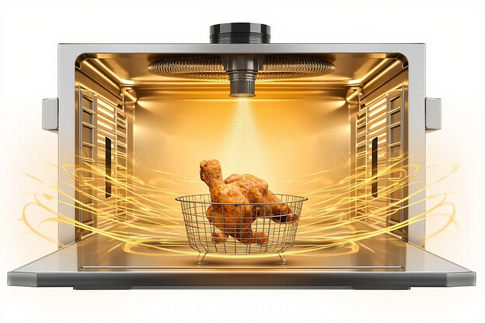

System and Method for Low-Oil Countertop Cooking via Atomized Oil Misting Combined with Forced Convection Heating for Crust Formation in Crust-Critical Foods

Abstract
Disclosed is a system and method for producing deep-fried texture, color, and flavor in crust-critical foods using approximately 1-2 tablespoons (15-30 mL) of cooking oil per cook cycle, in contrast to the 6-8 cups (1.4-1.9 L) required by conventional submergence deep fryers. The system combines (a) a high-velocity forced convection air stream at 180-230°C (350-450°F) with (b) continuous atomized oil misting of a high-smoke-point oil onto the food surface during the cook cycle. Atomization is performed by an ultrasonic or pneumatic nozzle fed by a metered oil pump drawing from a sealed reservoir. The combination produces a continuous thin oil film on the food surface that drives Maillard browning and crust formation, while the hot air stream drives off surface moisture and crisps the resulting crust — achieving the perceptual quality of submergence deep frying without oil submersion. The system is embodied as a countertop appliance with a 3.0-3.5 quart (2.8-3.3 L) cooking chamber, a 1500W resistive heating element, dual convection fans, a 50 mL oil reservoir, an ultrasonic atomizing nozzle operating at 20-200 kHz, a peristaltic micro-pump delivering oil at 0.5-2.0 mL/min, and a control system that modulates oil misting rate and air temperature based on a food-type preset or a manual recipe input.
Field of the Invention
This invention relates to consumer cooking appliances, specifically to methods and apparatus for producing fried-food texture in crust-critical foods (chicken wings, french fries, breaded items, vegetables) using a combination of forced hot-air convection and continuous atomized oil application, without submerging the food in hot oil.
Background
The Maillard reaction, first described by Maillard (1912, Comptes Rendus de l'Académie des Sciences) and elaborated by Hodge (1953, Journal of Agricultural and Food Chemistry), is the non-enzymatic browning reaction between amino acids and reducing sugars that occurs at temperatures above approximately 140°C and produces the characteristic brown color, aroma, and flavor of fried, baked, and roasted foods. The reaction requires both elevated temperature and the presence of a dry, oil-wetted food surface; without an oil film, surface moisture must be driven off before browning can begin, slowing the reaction and limiting color development.
Conventional cooking methods for producing Maillard-driven crust formation fall into two broad categories:
Submergence deep frying. Food is immersed in a bath of oil heated to 160-190°C. Heat transfer is rapid (thermal conductivity of oil is approximately 0.17 W/m·K versus 0.026 W/m·K for air), and the oil simultaneously supplies both the thermal energy and the surface oil film required for Maillard browning. However, submergence frying requires 1-2 liters of oil per cook cycle, presents fire and burn hazards from the hot oil bath, generates significant oil smoke and aerosol that triggers smoke alarms and deposits on kitchen surfaces, and produces food with high absorbed oil content (typically 8-25% by weight in finished fried foods, per Moreira (2013, Food Engineering Reviews)).
Forced-convection air frying (air fryers). A high-velocity hot air stream (typically 180-200°C) is directed at food placed in a perforated basket, with or without a brief manual oil spray applied by the user before cooking. Air fryers eliminate the oil bath and reduce oil absorption to 0.5-3% by weight, but the absence of a continuous oil film on the food surface during cooking limits Maillard browning. The result is food that is dry and crisp but lacks the color, aroma, and flavor of deep-fried food. Most air fryer manufacturers recommend the user manually spray or brush oil onto food before cooking; this is a one-time application, not continuous, and produces uneven coating.
Hybrid methods exist in commercial kitchens. Spray roasting systems (e.g., commercial chicken rotisseries with oil-misting attachments) use compressed-air atomization to spray oil onto food in a heated chamber, but these are large industrial systems, not countertop appliances, and do not modulate misting rate based on food type or cook stage. Combi ovens (e.g., Rational, Alto-Shaam) combine steam and convection but use steam for moisture control, not oil for crust formation.
The gap in the art is a countertop-scale appliance that:
- (a) Continuously applies a thin, uniform film of high-smoke-point oil to the food surface throughout the cook cycle via atomized misting,
- (b) Operates in a forced-convection air stream at temperatures sufficient to drive Maillard browning (180-230°C) while the oil film is continuously replenished,
- (c) Modulates oil misting rate, air temperature, and air velocity according to a food-type preset, manual recipe, or closed-loop feedback from a temperature or browning sensor,
- (d) Uses less than 30 mL of oil per cook cycle, eliminating the safety, smoke, and waste drawbacks of submergence frying,
- (e) Is sized, priced, and electrically powered for residential countertop use (≤1800W, 120V or 220V mains, <$300 retail).
Detailed Description
1. Cooking Chamber and Air Path
The cooking chamber is a 2.8-3.3 L (3.0-3.5 qt) volume enclosed by a removable perforated cooking basket (food support), a heating element, and at least one convection fan. In one embodiment, the heating element is a 1500W nichrome-wire resistive coil mounted at the top of the chamber, oriented to direct airflow downward through a fan and into the basket. In another embodiment, the heating element is mounted at the back of the chamber with a tangential fan that creates a high-velocity air curtain circulating around the basket. The cooking basket is constructed of stainless steel 304 wire mesh with 5-10 mm openings, sized to permit air and oil-mist flow through and around the food while supporting food pieces up to approximately 75 mm in the longest dimension.
Air temperature within the chamber is maintained at 180-230°C (350-450°F) by a closed-loop controller that modulates heating element duty cycle based on a thermistor (10 kΩ NTC, ±1°C accuracy) mounted in the air stream. Air velocity at the food surface is maintained at 1-5 m/s by a 12-25 W DC brushless fan. A second fan may be mounted in the chamber base to provide upward airflow and prevent hot-air stratification.
2. Oil Reservoir and Delivery System
A sealed oil reservoir of 30-100 mL capacity is mounted in the appliance base, accessible via a removable fill cap. The reservoir feeds a peristaltic micro-pump (12V DC, 0.5-5.0 mL/min flow range) or an equivalent positive-displacement pump. The pump delivers oil through a 1-3 mm ID tube to an atomizing nozzle mounted at the top of the cooking chamber.
The nozzle is one of:
- Ultrasonic atomizer: a piezoelectric element operating at 20-200 kHz, typically 108-140 kHz for food-grade oils, generating a 5-20 μm median droplet diameter spray at flow rates up to 2 mL/min. Power consumption 2-5 W. Preferred for low flow rates and quiet operation.
- Pneumatic atomizer: a venturi-style nozzle using compressed air (0.5-2.0 bar) supplied by a small diaphragm air pump to shear the oil into 10-50 μm droplets. Higher flow rate capacity (up to 10 mL/min) but noisier and requires an air pump.
- Hydraulic atomizer: a swirl-orifice nozzle that uses the oil's own pump pressure (3-10 bar) to create a hollow-cone spray. Simple, no air pump required, but produces larger droplets (50-200 μm) requiring longer residence time for film formation.
The nozzle is oriented to spray oil downward and outward into the air stream above the food basket, so that the droplets are entrained in the convection current and deposited on the food surface uniformly. In a dual-nozzle embodiment, nozzles are mounted on opposite sides of the chamber to improve coating uniformity.
3. Oil Composition
Recommended oils are those with smoke points above 230°C (450°F) to avoid thermal degradation in the heated chamber. Suitable oils include refined avocado oil (smoke point 270°C), refined peanut oil (smoke point 232°C), refined safflower oil (smoke point 232°C), and rice bran oil (smoke point 254°C). Olive oil and unrefined oils with smoke points below 200°C are not recommended for use in the high-temperature cooking mode but may be used in a low-temperature mode (150-180°C) for roasting vegetables.
4. Control System and Presets
The appliance includes a microcontroller (ARM Cortex-M0 or equivalent) connected to the heating element, fans, oil pump, atomizer, NTC thermistor, and a user interface (2.4-3.5 inch color TFT touch LCD). The control system executes food-type presets that specify:
- Target air temperature (e.g., 200°C for chicken wings, 220°C for french fries, 180°C for vegetables)
- Oil misting rate (e.g., 1.0 mL/min for wings, 0.6 mL/min for fries, 0.4 mL/min for vegetables)
- Cook duration (e.g., 18 minutes for wings, 14 minutes for fries, 10 minutes for vegetables)
- Air velocity profile (e.g., constant, pulsed, or ramped)
- Optional preheat phase duration (typically 2-3 minutes of empty-chamber heating before food insertion)
A closed-loop browning sensor embodiment adds a low-cost colorimeter or reflectance sensor (e.g., TCS34725 RGB sensor) looking into the chamber through a viewport, providing real-time feedback to the controller to extend or shorten the cook cycle when target browning is reached. This eliminates the need for the user to manually check food at intermediate times.
Recipes may be loaded via WiFi from a cloud service, with the controller communicating over 2.4 GHz WiFi (IEEE 802.11 b/g/n) using a Tuya, Espressif ESP32, or equivalent module. The cloud service may provide recipe updates, usage analytics, and remote control via a smartphone app.
5. Method of Operation
In operation, the user fills the oil reservoir with a high-smoke-point oil, places food in the basket, selects a preset, and starts the cook cycle. The chamber preheats for 2-3 minutes, after which the convection fan ramps to operating speed. The atomizer is activated and begins spraying oil into the air stream, which is entrained in the convection current and deposited on the food surface at a rate determined by the preset. The heating element maintains chamber temperature within ±3°C of the setpoint. After the cook duration elapses (or, in the browning-sensor embodiment, when the target color is reached), the atomizer and heating element shut off, the fan continues for 30-60 seconds to cool the chamber, and an audible alert signals completion.
Claims
- A countertop cooking appliance for producing fried-food texture with reduced oil consumption, comprising: a cooking chamber; a heating element configured to heat air within the chamber to 180-230°C; at least one convection fan configured to circulate the heated air at 1-5 m/s; a perforated cooking basket sized to support food within the chamber and to permit air and oil-mist flow through and around the food; a sealed oil reservoir of 30-100 mL capacity; a metered oil pump configured to deliver oil from the reservoir at 0.5-2.0 mL/min; an atomizing nozzle configured to produce a spray of oil droplets of 5-50 μm median diameter into the heated air stream; and a controller configured to modulate heating element duty cycle, fan speed, and oil pump rate.
- The appliance of claim 1, wherein the atomizing nozzle is an ultrasonic atomizer comprising a piezoelectric element operating at 20-200 kHz, configured to produce oil droplets of 5-20 μm median diameter at oil flow rates up to 2.0 mL/min.
- The appliance of claim 1, wherein the atomizing nozzle is a pneumatic atomizer comprising a venturi-style orifice and a diaphragm air pump configured to deliver compressed air at 0.5-2.0 bar, configured to produce oil droplets of 10-50 μm median diameter at oil flow rates up to 10 mL/min.
- The appliance of claim 1, wherein the controller executes a food-type preset specifying a target air temperature, an oil misting rate, a cook duration, and an air velocity profile, and wherein the preset is selected by the user from a plurality of stored presets corresponding to chicken wings, french fries, breaded items, and vegetables.
- The appliance of claim 1, further comprising a reflectance or colorimetric sensor mounted in the cooking chamber, the sensor configured to provide real-time feedback to the controller, and the controller configured to terminate the cook cycle when the sensed browning of the food reaches a target value.
- The appliance of claim 1, further comprising a WiFi communication module configured to receive recipe parameters from a cloud service and to transmit appliance usage data to the cloud service, and a smartphone application configured to display recipe parameters, control the appliance remotely, and receive notifications upon cook cycle completion.
- A method for cooking crust-critical foods with reduced oil consumption, comprising: preheating a cooking chamber to 180-230°C; placing food in a perforated cooking basket within the chamber; circulating heated air through the chamber at 1-5 m/s; continuously atomizing a high-smoke-point cooking oil into the heated air stream at a rate of 0.5-2.0 mL/min, such that oil droplets are entrained in the air stream and deposited as a thin continuous film on the food surface; maintaining the chamber temperature within ±3°C of a setpoint by closed-loop modulation of a resistive heating element; and terminating oil atomization and heating when a preset cook duration elapses or when a target food browning is reached.
- The method of claim 7, wherein the high-smoke-point cooking oil is selected from the group consisting of refined avocado oil, refined peanut oil, refined safflower oil, and rice bran oil, and wherein the oil is consumed at a rate of 1-2 tablespoons (15-30 mL) per cook cycle serving 1-4 portions of food.
- The method of claim 7, further comprising modulating the oil atomization rate as a function of cook stage, wherein the atomization rate is lower during an initial moisture-evaporation phase and higher during a subsequent Maillard-browning phase, such that oil is conserved during the phase when browning is rate-limited by surface moisture rather than by oil film thickness.
- The method of claim 7, further comprising producing a food product with an oil absorption rate of 1-5% by weight, compared to 8-25% by weight for food products produced by submergence deep frying, such that the caloric content of the food is reduced by 100-300 kcal per 100 g serving relative to submergence-fried equivalents.
- The appliance of claim 1, wherein the sealed oil reservoir, oil pump, and atomizing nozzle form a removable subassembly that may be detached from the cooking chamber and cleaned separately, such that residual oil does not contact the heating element or the cooking chamber surfaces and does not degrade during storage.
- The appliance of claim 1, further comprising a secondary infrared or halogen heating element configured to deliver radiant heat to the upper surface of the food at a flux of 5-20 kW/m², supplementing the convective heat transfer from the heated air stream and accelerating crust formation on the food's upper surface relative to its lower surface.
Prior Art References
- Hodge, J. E., "Dehydrated Foods, Chemistry of Browning Reactions in Model Systems," Journal of Agricultural and Food Chemistry 1(15), 1953 — foundational review of Maillard reaction chemistry
- Moreira, R. G., "Deep Fat Frying Fundamentals," in Handbook of Food Science, Technology, and Engineering, CRC Press, 2006 — oil absorption kinetics in submergence frying
- Kalogianni, E. P. et al., "Effect of Frying Time and Temperature on the Quality of French Fries," Food Science and Technology International, 2010 — quantitative oil absorption data in deep frying
- US Patent 6,906,290 B2 — "Spray roasting apparatus" — commercial-scale oil-misting roasting systems, not residential
- Rational, Combi-Oven Technology (product literature) — combined steam/convection commercial ovens, no continuous oil misting
- Vega-Mercado, H. et al., "Air-Drying and Oil Absorption in Frying of Tortilla Chips," Food Chemistry 107(1), 2008 — oil absorption comparison: submergence vs. air-frying
- US Patent Application 2015/0017299 A1 — "Low-oil cooking apparatus" — describes manual oil spray by user, not continuous atomized misting
- Teruel, M. et al., "Recent Advances in Frying Technology," Trends in Food Science & Technology 46(1), 2014 — review of alternative frying techniques including hot-air and hybrid methods
- US Patent 4,770,891 — "Method of atomizing oil for cooking" — oil atomization for griddles, not forced-convection cooking chambers
- Wirecutter, "The Best Air Fryer," reviewed 2025 — current consumer air fryer performance benchmarks; manually-applied oil coatings
- TCS34725, ams OSRAM digital color light sensor datasheet — low-cost reflectance sensor suitable for in-chamber browning feedback
- Saguy, I. S. & Pinthus, E. J., "Oil Uptake During Deep-Fat Frying," Food Science and Technology International 4(1), 1998 — quantitative model of oil absorption mechanisms in fried foods